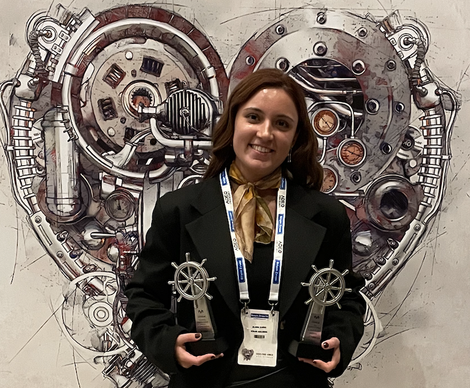

Production-focused engineer with 3.5+ years building enterprise ML systems, RAG architectures, and computer vision solutions. Warwick MSc of Applied AI candidate and WMG Excellence Scholar.

Results-oriented AI and Machine Learning Engineer with a strong mathematical foundation and practical enterprise experience. Currently pursuing an MSc in Applied Artificial Intelligence at the University of Warwick, where I was awarded the competitive WMG Excellence Scholarship recognising academic and professional excellence (top 5% of applicants).
Over 3.5 years at Assan Bilişim (Kibar Holding, Turkey), I designed and deployed production-grade ML systems spanning energy forecasting, computer vision quality inspection, enterprise RAG chatbots, predictive quality models, and logistics optimisation. Each project delivered measurable business impact, and my work has been recognised with 5 national technology awards, including Technology Captain Runner-Up of the Year 2024.
My current research focuses on advanced embedding and retrieval strategies for RAG systems, applying these techniques to UK Planning Policy documents in collaboration with industry partner Raiven. I also co-delivered a guest lecture on Introduction to RAG and Emerging RAG Technologies to MSc students at Warwick.
Currently holding a UK Student Visa. Eligible for the UK Graduate Route visa. No sponsorship required for 2 years. Available from Mid September 2026.
End-to-end ML systems from data engineering to deployment and monitoring
Enterprise RAG architectures with Azure OpenAI and custom retrieval strategies
Real-time defect detection with <100ms latency in manufacturing
Statistical modelling, forecasting, and actionable business insights
From production ML systems at a major industrial conglomerate to back-end development at a digital agency.
Led the full lifecycle of K-Bot, a GPT-4 powered Retrieval-Augmented Generation chatbot serving 1,200+ employees across HR and IT departments. Designed a custom RAG architecture using Azure OpenAI Service, Microsoft Copilot Studio, and OpenAI Studio, experimenting with multiple embedding strategies (comparing different models and hybrid approaches), retrieval methods (semantic search combined with keyword matching), and chunking techniques (semantic segmentation, overlapping windows, context-aware splitting). Trained the system on internal knowledge bases including policies, procedures, and IT documentation. Implemented Power Apps for user interfaces, Power Automate for workflow orchestration, and Azure AI Service for intelligent document processing. Deployed via Microsoft Teams and SAP integration, with an external Streamlit portal connected through a secure Flask API.
Impact: 50% reduction in operational workload · 3x faster information access · 85%+ user satisfaction · Won 3 national technology awards
Developed production XGBoost regression models to forecast Turkey's national electricity consumption and market clearing prices (PTF), enabling data-driven hydroelectric production planning. Implemented cvxpy-based mathematical optimisation for profit maximisation against the national electricity grid. Built an end-to-end automated MLOps pipeline on Azure integrating Synapse Analytics for data warehousing, Azure ML for model training and experiment tracking, and MLflow for model versioning and lifecycle management. Automated retraining and CI/CD deployment through Azure DevOps. Engineered a REST API data ingestion pipeline with automated error handling, data validation, and daily SQL database writes. Implemented statistical time series analysis and feature engineering incorporating weather data, historical consumption patterns, and economic indicators. Generated automated QlikSense dashboards for real-time business reporting and KPI tracking.
Impact: 2% profit margin increase · £250K+ annual revenue uplift · 92% forecast accuracy · 18% reduction in forecasting error · Project of the Year 2023
Engineered a real-time YOLOv8 defect detection system for automated visual inspection of surface and structural defects on manufacturing production lines. Trained on 15,000+ annotated images achieving 94% precision, exported to ONNX format for edge deployment with <100ms inference latency. Integrated with PLC sensors for continuous 24/7 operation. Designed a model evaluation framework with precision-recall analysis and production monitoring.
Impact: 30% improvement in defect detection · Eliminated manual quality checks · Prevented faulty shipments
Developed multi-class XGBoost classification models achieving 89% F1-score to predict product serviceability and quality outcomes pre-shipment based on 47 production parameters. Performed extensive feature engineering, statistical analysis, and model validation using cross-validation. Integrated with SAP and Microsoft Fabric via bi-directional Flask API.
Impact: 23% reduction in rework · Minimised production delays · Prevented faulty shipments
Created a bin-packing optimisation algorithm balancing multi-dimensional constraints including sequence, weight distribution, volume utilisation, and load stability (200+ constraints). Deployed via Flask API integrated with SAP for automated order processing, with an interactive 3D visualisation interface built using FastAPI.
Impact: 15% improvement in truck utilisation · 60% reduction in manual planning · Standardised all domestic shipments
Developed and maintained scalable web applications using .NET Core, building efficient APIs and server-side logic alongside senior developers. Implemented database structures and wrote optimised SQL queries for data retrieval and performance improvement. Collaborated with UX designers to translate design requirements into efficient system logic. Worked remotely in an agile environment, managing tasks independently and delivering on sprint commitments.
Dissertation research, outstanding coursework, and guest lecturing at the University of Warwick.
Researching how embedding and retrieval strategies can improve the performance of RAG-based systems, using UK Planning Policy documents as the domain-specific dataset. Exploring Graph-RAG, hybrid retrieval methods, embedding enrichment strategies (graph embeddings vs text embeddings), and novel context-building approaches for domain-specific question answering. Communicate and collaborate with employees(Raiven) to further discuss the architecture, having weekly meetings.
Achieved Outstanding grades for both the group application (with group presentation) and the individual application with critical reflection report. Developed AI and data mining solutions demonstrating strong analytical and applied skills. Communicate and collaborate with International students for a group project
Achieved Distinction grades for both the group application (with group presentation) and the individual application with critical reflection report. Built AI programming solutions showcasing software engineering and machine learning skills. Communicate and collaborate with International students for a group project
Co-delivered a guest lecture with my supervisor to MSc students, covering the fundamentals of Retrieval-Augmented Generation, Graph-RAG, and emerging techniques in the RAG ecosystem. Created the lecture presentation and accompanying GitHub code examples for students.
Developed a high-level AI coding agent composed of 11 specialised sub-agents. The system acts as an AI coding assistant that secures code, enforces best practices, and includes ethics and security vulnerability checks. Built a comprehensive technology stack that the judges praised highly, with an accompanying demo video. Built with international teammates from WMG MSc Applied AI.
Secured 3rd place in the Sustainability Track. Developed RE:GEN, a multimodal AI assistant that analyses photos of household items, identifies local disposal rules, and provides creative upcycling suggestions. Designed to bridge the gap between complex waste regulations and sustainable consumer habits in the UK. Built with teammates Dilara Bayram and Rahulsivanand S, representing WMG, University of Warwick.
Co-delivered a MSc-level lecture on Introduction to RAG and Emerging RAG Technologies, sharing practical insights from the award-winning K-Bot enterprise deployment. Created the presentation slides and GitHub code repository for student use.
Mentored 3 junior engineers on ML best practices, Azure services, and production deployment workflows. Led cross-functional coordination with logistics, sales, HR, IT, and SAP teams across multiple enterprise AI projects at Kibar Holding.
Available from September 2026. Eligible for UK Graduate Route. No sponsorship required.